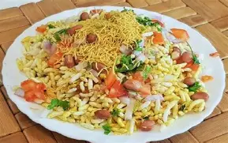

girmit
⭐⭐⭐⭐⭐ 4.3 Rating | ⏱ 10 Minutes | 🍽 3 Servings
Category
Main Course
Difficulty
Easy
Calories
190 kcal
Cooking Style
Vegetarian Curry
📋 Ingredients
- 2 Tomato
- 2 Onion
- 4 chilli
- 2 Puffed Rice
- 10ml cooking oil
- Red Chilli Powder
- 1/2 tbs turmeric powder
- 1 tbs Suhana masala powder
- Groundnut
- Salt
- 1 tbs Lemon juice
🍳 Required Utensils
- large size Bowl
- Cooking Spoon
- Knife
- Cutting Board
📖 Introduction
Girmit (also known as Mandakki Susla or Masala Mandakki) is a popular street food snack from North Karnataka, India. Made by tossing puffed rice (murmura or mandakki) with a tangy, spiced onion-tomato masala base (gojju), it balances spicy, sour, and crunchy flavors.
🔬 Principle
The bhindi is lightly fried before adding it to the gravy. This reduces stickiness and helps the vegetable absorb the rich tomato-onion masala while remaining tender.
👨🍳 Procedure
- 15-20 pieces Fried Groundnut
- 2 Cup puffed rice
- Add Chopped tomato
- Add Copped Onion
- Add 2 tbs oil
- Add 1/2 tbs red chilli powder
- Add 1/2 tbs turmeric powder
- Add 1 tbs masala powder
- 1 tbs lemon juice
- Pinch salt
- Fresh Coriander Leaves
- These all add to large size bowl and mix it.
⚠ Precautions
- High Glycemic Index: Puffed rice causes a rapid spike in blood sugar; individuals with diabetes should monitor portion sizes.
- Sodium Content: Commercial sev and added salt can increase sodium intake; adjust salt levels if watching blood pressure.
- Sogginess Hazard: Moisture ruins the texture—never let the mixed dish sit before consuming.
💡 Chef Tips
- Crisp the Mandakki: Dry-roast the puffed rice on low heat for 2-3 minutes before mixing to guarantee maximum crunch.
- Make Gojju in Advance: The cooked tomato-tamrind masala (gojju) can be made ahead and stored in the fridge for up to a week.
- Mix Right Before Eating: Combine the wet masala with puffed rice only seconds before serving to prevent it from turning soggy.
🥗 Nutrition Facts
| Nutrient | Amount |
|---|---|
| Calories | 180-220 kcal |
| Protein | 4 g |
| Carbohydrates | 32 g |
| Fat | 6 g |
| Dietary Fiber | 2.5 g |
🍽 Serving Suggestions
- Classic Street Style: Top generously with fine sev, roasted peanuts, fresh coriander, and finely chopped raw onions.
- Pairing: Serve fresh with hot Mirchi Bajji (chilli fritters) and a cup of South Indian filter coffee or chai.
🌿 Health Benefits
- Light & Low-Calorie Base: Puffed rice provides a light, easily digestible energy source without high calories.
- Gut-Friendly: Simple carbohydrates make it soft on digestion, ideal for a quick energy pick-me-up.
- Rich in Iron: Puffed rice contains naturally occurring iron, supporting healthy blood oxygen levels.
✅ Result
A contrast of light, crispy puffed rice combined with crunchy toppings (sev, roasted peanuts, raw onions) against the rich, thick texture of the cooked masala.A balance of spicy (green chilies/red chili powder), sour (tamarind/lemon juice), sweet (jaggery/sugar in the gojju), and savory notes.A vibrant, dark-golden street food snack served immediately upon mixing to retain its signature crunch.
🎥 Watch Recipe Video
Learn the complete recipe by watching the step-by-step video.
▶ Watch on YouTube